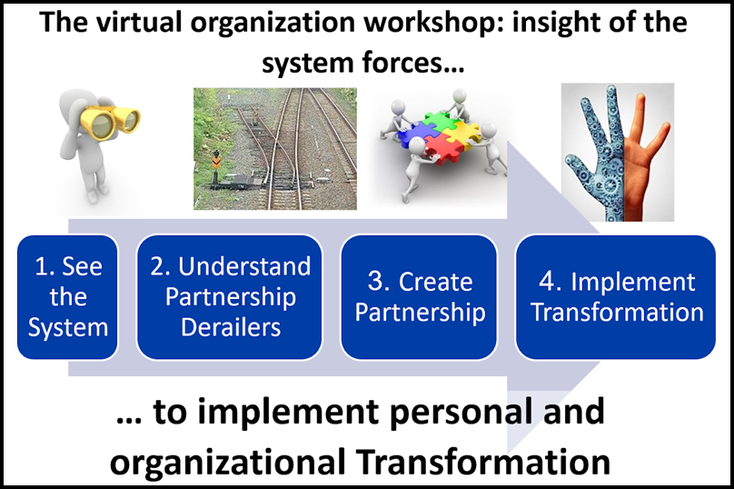
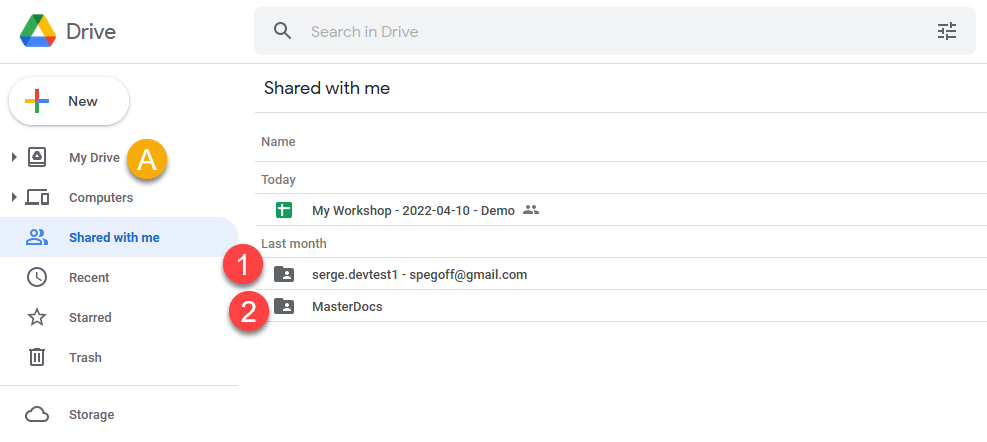
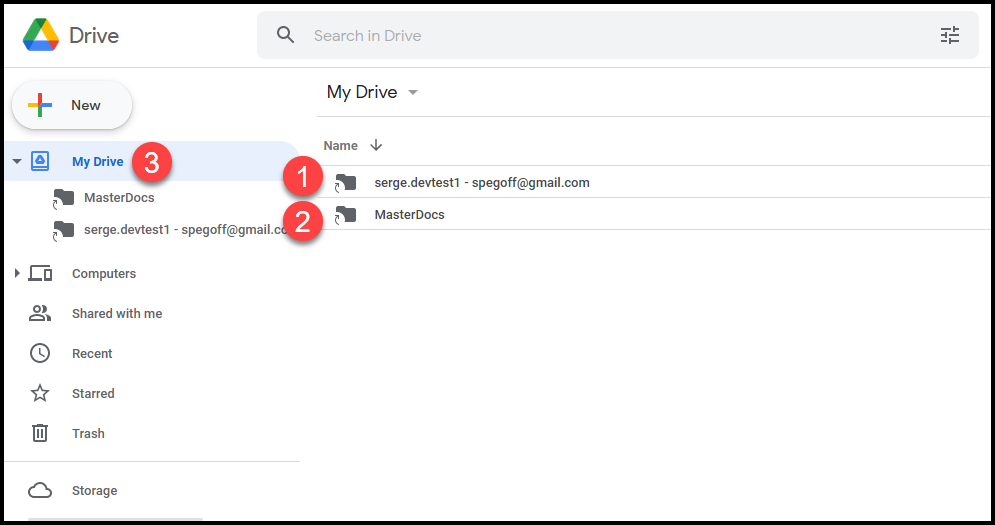
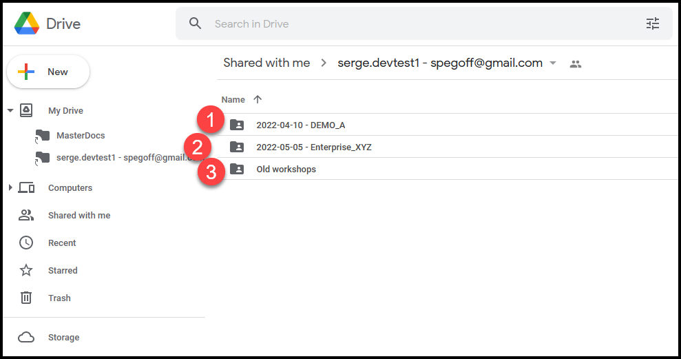
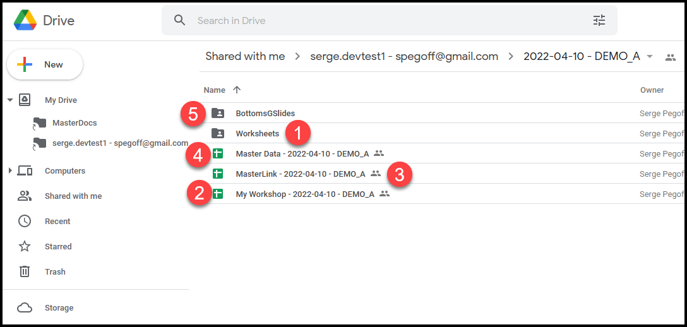
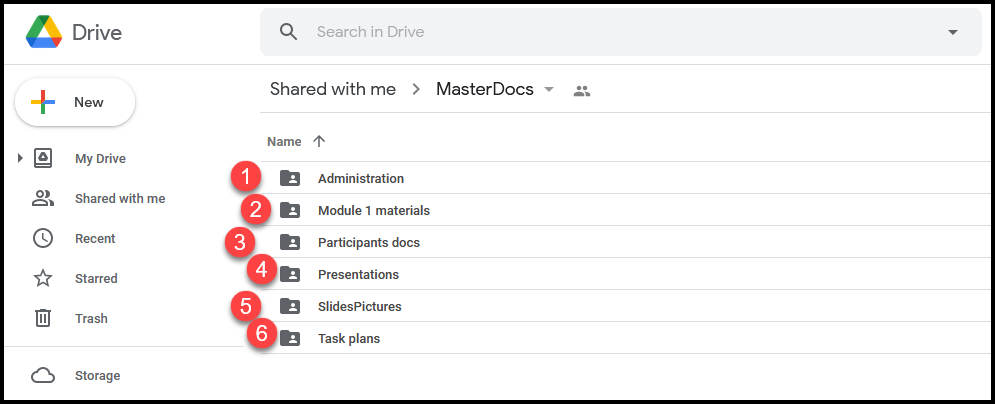
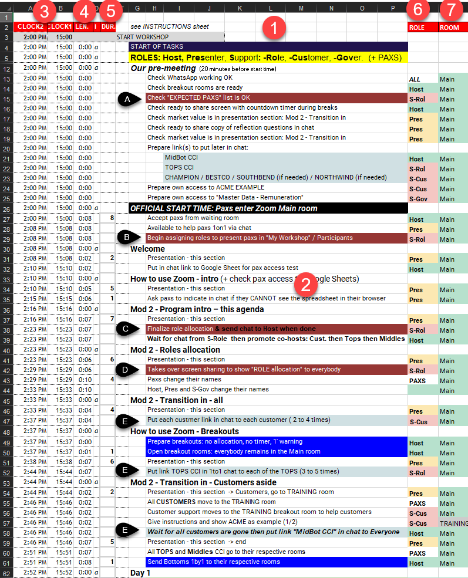
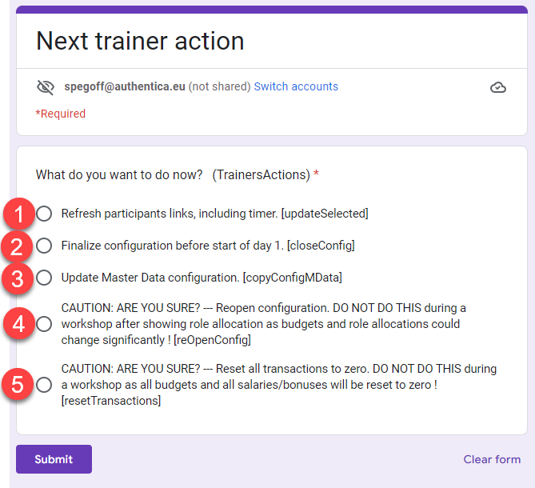

The virtual OW
Table of Contents
- Welcome to the trainer/host manual
- Technical requirements
- The virtual OW platform for trainers
- Support team requirements
- Virtual OW preparation
- How to design your workshop and adapt documents?
- What info to send to participants?
- How to prepare the meeting configuration/breakouts?
- How to ensure a well coordinated support team?
- Optional: How to change the OW role instructions?
- Optional: How to prepare links to be shared across all virtual rooms?
- Virtual OW module delivery
- Annexes
Welcome to the trainer/host manual
Click inside the Table of Contents to see and access the (sub)sections.
Download a PDF copy of this document (with its Table of Contents).
What is the virtual OW platform?
The virtual OW platform is a set of integrated tools, documents and instructions allowing a certified OW trainer to deliver an OW entirely on-line:
- ensuring participants live an immersive "seeing the system" experience close to the one designed by Barry Oshry
- keeping all essential ingredients as close as possible to the original "in-person" OW
The benefits of the virtual OW platform are:
- flexible and extensible design based on 2 modules (same day or not!) for the core "4 or 5 CCI days" OW: compatible with the attention patterns of participants in the virtual world
- a safe process to (re-)allocate roles, for participants and in the support team, when anybody could disappear, willingly or unwillingly, into the Internet no/poor connection "black hole" without any warning
- a mechanism to distribute role-specific support materials in the virtual space
- a resilient system for money exchange for all transactions (Customers and Tops), for all real-time information needs (like Middles/Bottoms salaries) and for the production of deliverables by Bottoms teams
How do participants experience the virtual OW?
Participants in a virtual OW use 2 distinct software simultaneously:
- a meeting platform for:
- receiving instructions and OW strategic frameworks in webinar mode
- participating to group interactions: TOOTs, debriefs, Q/A… in meeting mode
- communicating with other participants in separate virtual rooms via audio, video and room chat
- moving between virtual rooms
- the work documents platform for:
- CCI customers creating contracts and payments within their pre-assigned budget
- CCI TOPS consulting customer payments and using available funds to pay salaries and bonuses
- CCI BOTTOMS creating and presenting the deliverables for CCI customers on one shared PowerPoint document per team
- CCI MIDDLES and BOTTOMS checking their remuneration
To understand better how to use the virtual OW as an OW trainer, you should first discover the real screens participants will use by following the walk through on our website.
Technical requirements
What meeting platform for the virtual OW?
Zoom is the recommended meeting platform as the virtual OW requires these features:
- Breakout rooms which enable small group meetings with video
- A large room where the host can “call back” all participants and where +/- 30 participants can see each other video
- Movement capability: some participants can see who is in which breakout room, and can move freely (without the assistance of the meeting host) between any of the breakout rooms
- Possibility to grant/suppress this movement capability to any participant (via the "co-host" status in Zoom)
- Easy editing by participants of their screen name (to make their OW role visible to all other participants)
[For the virtual OW platform users] Zoom configuration and guide are in folder: MasterDocs\Administration
Why do we not recommend Microsoft Teams? As of early 2021:
- the base paradigm of Teams are conversations (not meetings like Zoom or Webex) and one must visit all conversations to which a user is registered to know in which conversation (s)he is currently present with video.
- it is unclear how to grant/suppress movement capability to participants.
Webex seems to be a viable alternative. As we have no experience with it, we do not provide any guidelines for its usage.
What are the requirements for participants?
- Computer with speakers/microphone/camera on the Internet: PC with Windows 10 or Mac with OS 10.9 or later.
No Android/IOS tablet or mobile phone! - Access to Zoom either:
- via an Internet browser: one of the 2 last versions of Google Chrome (PC or Mac) or Microsoft Edge (PC). This browser will also provide access the the virtual OW document platform.
- or via the installation of (or update to) the last version of Zoom Client for Meetings. And then also access to the virtual OW document platform via one of the 2 last versions of either Google Chrome / Safari / Firefox / Microsoft Edge
When delivering a virtual OW within a company, company-wide IT policies/configurations could block participant PCs to access the virtual OW!
To anticipate this risk, conduct these tests/conversations BEFORE committing to the virtual OW delivery
- Instruct to access Zoom via an Internet browser (without any downloaded program)
- Ask your client contact to check that "Zoom via Internet browser" is OK and that they are no firewall restrictions to access without login to Google Docs and shared Powerpoints. You contact must be able to access these 2 links :
- Read access to this worksheet
- Read and Write access to this presentation : click first on "Edit in Browser" then write anything in it
- explain to IT/security, if needed, that there are NO:
- downloaded programs
- login into Google Docs
- request for any email address
[For the virtual OW platform users] Participant Zoom step-by-step access guides are in folder: MasterDocs\Administration
What are the requirements for the support team?
The support team has the same requirements as participants, with Zoom installed on their computer. Support team members must also have a Google account, either:
- an account in their corporate Google Workspace
- a personal Google account: /something/@gmail.com
If their corporate account has restrictions and/or they do not want to use their Google account to manage virtual OWs, members of the support team can create another Google account just to manage virtual OWs: goto account.google.com
Members of the support team need also a "back channel" between them to communicate without disturbing the participants: any chat based application, like WhatsApp, can be used.
Additional requirements are needed to ensure the support roles continuity.
The virtual OW platform for trainers
What are the virtual OW design characteristics?
2 core modules
To maximize participant engagement, we have designed the virtual OW in 2 core and 2 optional modules of 75 minutes to 3 hours each, which could be delivered together or over multiple days/weeks:

The “core OW” consists of Modules 2 and 3. Modules 1 and 4 are optional:
- The first module "See The System" (+/- 75 minutes) is optional. It is a mini-OW to use when technology presents some important challenges for participants. It is also used when it is desirable for participants to have the experience of two different positions in the organization.
- The second module "Understand Partnership Derailers" (180 minutes) covers the OW Transition-in, Days 1 & 2, and the first TOOT.
- The third module "Create Partnership" (150 to 180 minutes) covers Days 3, 4 & 5, the second TOOT, and the Transition-out.
- The fourth module "Implement Transformation" guides participants in applying the insight of system forces towards implementing personal and/or organizational transformation (action plans).
Modules 2 and 3 together cover the first experiential exercise cycle of 5 days including all the strategic frameworks covered during the first day of the workshop in the Leader’s Guide.
An example of a potential Module 4 is included in the reference documents with 2 sections built on the OW framework, one for a more organizationally oriented application and the second one for a more personally oriented application.
Scheduling these modules on different days allows to give participants homework: journaling, preparation, application…
Design differences with in-person OW
The key other design differences between the official OW Leader’s Guide from powerandsystems.com and the virtual OW modules are:
- "Bottom shoes" are replaced with the freedom to move between virtual rooms. At the start of the 5 days, Bottoms are moved into their respective team work room and they cannot move. But customers, Tops and Middles can move freely between virtual rooms. From the second day onwards, Tops can decide to use some of CCI money to pay the Government to buy movement freedom for one (or more) Bottom(s).
- The “Side Show / Centre Ring” image is replaced by “Sidetracked / Centered”
- The strategic frameworks are delivered in a slightly different order to allow to give participants homework between modeles 2 and 3 to check the fit of their reality with "Sidetracked" and "How Come It Goes The Way It Usually Goes"
- Module 2 delivers the following strategic frameworks after TOOT #1:
- Sidetracked (Side Show) [but not yet Centered (Center Ring)]
- How Come It Goes The Way It Usually Goes
- Module 3 starts off from these strategic frameworks and asks participants to apply them beginning on day 3 of the experiential exercise:
- Centered (Center Ring)
- What Else Is Possible
- Module 2 delivers the following strategic frameworks after TOOT #1:
What are the min./max. number of participants?
The virtual OW can distribute roles to minimum 10 and maximum 38 participants.
You can have 9 or 8 participants by assigning 1 or 2 customer roles to a member of the support team (or to their colleague(s)/business partner(s)) instead of 1 or 2 participant(s). We have run 2 virtual OW workshops with respectively 11 and 9 participants: in the virtual world the Top/Middle/Bottom/Customer contexts conditions worked very well with this small number of participants.
You can have more than 38 participants by distributing the same role to 2 participants who work then together: ideally in a Bottom team. We do not recommend to go too much above 35 participants to avoid risks of degrading their experience.
How do I access my vOW workspace for trainers?
You can order the creation of a virtual OW workspace with a DEMO workshop, accessible from your personal Google account: here.
Once you receive the workspace creation confirmation, just log into the personal Google account you have given us and go to Google Drive: drive.google.com.
If you need help to get started with your Google account and Google Drive, you can find a good free (as of April 2022) training here.
The first time you access your workspace, follow these steps:
- click on 'Shared with me' in the left margin to see the files shared with your account
- you will see 2 folders: marked 1 and 2 in the picture below, your folders can have a different name!
- grab the 2 folders and drop them on 'My Drive' (marked A below) to create links from your Google Drive root
- click on 'My Drive' to return to your Google Drive root

After logging in (and having created the links as indicated in the Note above), you will see the root of your Google Drive

- the folder "MasterDocs" contains all the reference documents you can copy and adapt to deliver your workshops (just click on it to open it).
- the workshop folder contains all your workshops and their files needed to run them. Its name has 2 parts separated by "-":
- a specific name for this workspace ("serge.devtest1" in the example above)
- the email address you gave for communications about your use of the virtual OW
- click here when you want to return to your Google Drive root
What are my current workshops?
Click on your your workshop folder to open it and you will see the list of your workshops:

- there is one folder with its name starting with "DEMO" (preceded by the date when it was created): this is your DEMO workshop.
- there can be multiple folders with other names (not starting with DEMO): these are your current PREMIUM workshops. Their name is preceded by either:
- 2 dates: the date when you will run module 2 followed by the date when you will run module 3
- 1 date: the date when you will run both modules consecutively, followed by "x2"
- this folders contains all archived past PREMIUM workshops: they are not active any more
Just after the creation of your workspace, there will be only one workshop: the DEMO workshop.
What are the files in each workshop?
The DEMO and all active PREMIUM workshops have the same directories and structure. When you open one of them (just click on it), you will see:

- "Worksheets" folder: used by the system, no reason for you to go there
"My Workshop - …": either
- "My Workshop - [date] - DEMOxxx" for a DEMO workshop
- "My Workshop - [date A] - [date B] - XXXX " for a PREMIUM workshop
This is the spreadsheet you (and members of your support team) will use to manage the delivery of a virtual OW module 2 or module 3
- "MasterLink - …": contains the links to the work documents specific to each OW roles (you can see these work documents on the participant walk through). These links are usually distributed to participants via the meeting platform chat.
- "Master Data - …": where you can see (but not change) all the data about the financial transactions during modules 2 and 3. These financial tables are usually shared with participants via screen sharing during the "transition out"
- "BottomsGSlides": used by the system (the Google Slides docs used by Bottoms to prepare their deliverables to CCI customers, only used for DEMO workshops), no reason for you to go there
What are the reference documents?
Reference documents, all supporting documents useful to run a virtual OW, are in the "MasterDocs" folder:
- return to the top of your workspace by clicking on "My Drive" (left vertical menu)
- click on "MasterDocs" to open its folder
The reference documents are stored in these folders:

- Administration: participant email template, description of participants system requirements, Zoom configuration and instructions
- Module 1 materials: module 1 script and slides
- Participants docs: customer orientation script and video, participant guide (extract of slides), OW reflection log, modules feedback document
- Presentations: the PowerPoint presentations we use for modules 2, 3 and 4
- SlidesPictures: images you can share across virtual rooms if your meeting platform does not have this feature (like Zoom as of early 2021)
- Task plans: detailed task plans - from workshop check-up until workshop closing - to ensure error free coordination of all support roles for modules 2 and 3. The task plans are structured into sections: the same sections are used also to structure the PowerPoint presentations.
All reference documents are read-only. You can copy them to the top of your workspace ("My Drive" folder) where you can edit/rename the copy and then move it possibly to one of your "My Documents" folder. For handling Microsoft Office documents in Google workspace, we have prepared these recommendations.
If you need help to use Google Drive, you can find it here.
Support team requirements
What are support roles responsibilities?
While experienced facilitators will readily deliver an in-person Organization Workshop alone (with minimal help from a client assistant), the virtual (on-line) version adds a layer of risk and complexity that is mostly outside the control of the facilitator - namely its reliance on information & communication technology. At the same time the virtual environment severely limits all non-verbal communication cues - for instance: participants disappearing or disengaging, or conversely trying to catch the facilitator’s attention by raising their hand. These specific roles must be fulfilled in the support team:
- Host (or Technical Coordinator): The Host role corresponds to the Zoom Meeting host. The Host prepares the virtual breakout rooms, ‘accepts’ participants into the Zoom Meeting, grants participants co-host status (to enable movement between breakout groups), calls back all participants into the main meeting room at the end of the breakout sessions (OW days), etc.. The Host also helps all participants with any technical problems. The virtual OW Host should therefore remain as much as possible in a room accessible by all participants from inside and outside the meeting platform (the Main Room in Zoom).
- Facilitator (or Trainer): The virtual OW Facilitator delivers all the virtual OW materials (including instructions on how to use the meeting platform), gives all OW instructions to the participants (except customer training as indicated hereafter), manages time to ensure completion within the planned schedule, manages the TOOTs, monitors the chat during plenaries. In addition, this role helps the TOPS to understand and master their financial transactions during day 1. The Facilitator will therefore join the TOPS in their virtual breakout room as soon as the Transition-in is finished.
- Support-Roles: This role allocates the OW roles to the participants ahead of the Transition-in and provides access to each participant to their work documents.
- Support-Customers: During the second part of Transition-in and at the start of first OW day this role explains to Customers their role (Customer Orientation) and the use of their Customer work documents for projects/payments.
- Support-Tops: At the start of first OW day this role explains to Tops the use of their Tops work documents for tracking cash and remunerations.
- Support-Government: During all OW days, except the first one, this role answers any OW-related questions that participants may have, and checks that the payment for the promotion of Bottoms has been made before instructing the Host to promote them to co-host.
What are the detailed OW workshop role tasks?
Task plans - available in reference documents - describe all tasks (including breaks) by all roles (support team and participants) in sequence starting from the support team pre-meeting down to the end of module 2 or 3. A copy of the start of the task plan for Module 2 is included here below:

- List of sections, in bold, and detailed tasks within each section
- Section names match section names in the Powerpoint presentations available in reference documents. The task "Presentation - this section" presents section "Welcome" from the Module 2 presentation.
- CLOCK1 and CLOCK2: clock times in 2 different time zones. You can enter the start time on line 3.
- LEN.: the elapsed time in the current section
- DUR.: the planned duration, in minutes, of the task on the same line (line 40: participants changing their Zoom name is planned for 4 minutes). All tasks without a duration, considered as duration = 0 for the purpose of time calculations, are concurrent with the first preceding task that has a duration and are deemed to finish before that preceding task. (line 35: this task should be completed before the task on line 33 is finished)
- Role: the role in the support team executing this task: see role descriptions. PAXS means participants.
- Room: the virtual room where this task takes place.
These task plans are available in Excel format:
- "Mod 2 - 3h standalone - Excel task plan.xlsx" : module 2 standalone (not on the same day as module 3), 3h duration with breaks
- "Mod 3 - 3h standalone - Excel task plan.xlsx" : module 3 standalone (not on the same day as module 2), 3h duration with breaks
- "Mod 2 3 - 5h30m + pause - Excel task plan.xlsx" : modules 2 with module 3 on the same day, 5h30 total duration with breaks but excluding a long pause between the 2 modules
You can download these plans in Excel format and modify them:
- change the task durations in the DUR. column
- modify/insert/delete tasks (and sections) as indicated in the INSTRUCTIONS sheet of these task plans
What is the minimum support team size?
We recommend that you use initially a support team of 3 people to deliver the virtual OW. And once you have built some experience and you understand how to mitigate risks, you can move progressively to a support team of 3 people during the first hour and 2 people during the rest of the workshop:
- The Host must remain available and easily reachable throughout the entire workshop to both welcome participants at the start of the workshop and, more importantly, to be ready to help with technical problems or with participants (re)joining on-going meetings in the right breakout room (e.g. in case they dropped out or accidentally left a meeting). The Host should therefore not take any other significant role. It is the only ‘full-time’ role even though this role may not always be active. A first support team member must be dedicated to the Host role.
- The Facilitator role is active throughout the entire workshop - except for the OW days. A second support team member must be dedicated to the Facilitator role.
- The Support-Roles is only active during the first half-hour of Module 2 (and Module 3 if not sequential) and could be done by an experienced Host.
- The Support-Customers role is active in parallel with the Facilitator and the Host roles during the second half-hour of Module 2 (and Module 3 if not sequential). So we need here a third support team member.
- The Support-Tops role is active only during the first OW day and could therefore be taken by the Facilitator.
- The Support-Government role is active only during the OW days 2 through 5 and could therefore be taken by the Facilitator.
What are the needed competences?
The competences and experience needed to fulfil each role are:
| Role | Competences | Part.(2) |
|---|---|---|
| Host | Deep knowledge of managing the meeting platform (1) ; Tech-savvy (4) | 1 |
| Facilitator | Organization Workshop trainer certified by Power+Systems | |
| Support-Roles | Mastering the role allocation process | 1 |
| Support-Customers | Mastering the Customer Orientation (3) | 1 |
| 3rd team member | Tech-savvy (4) | 1 |
Notes:
(1) Most critical competence to complement a typical certified OW facilitator: the Zoom Host must be capable of executing easily all instructions of the "Zoom technical coordinator guide" in the Administration folder of the reference documents
(2) Minimum number of virtual OWs attended as participant
(3) Detailed script and example video for virtual OW customer orientation are in the reference documents: MasterDocs / Participant docs
(4) To help participants who encounter technical difficulties
What investment to learn to deliver the first virtual OW?
Once the support team with the right competencies is assembled, what investment is needed to learn to deliver the first client virtual OW?
Here is the list of activities and time needed by a 3 person team (2 certified OW facilitators and one confirmed Zoom producer) to go from "zero" to a succesful first PREMIUM workshop over a period of one week:
| . Activity | Who | Hours(1) | Total(2) |
|---|---|---|---|
| The team lead facilitator attends the free 1 hour intro webinar (see support) and contracts team access and one PREMIUM workshop | team lead | 3 | 3 |
| All team members look through the materials (website + this document + reference documents), to get a feel for the work and the roles | all team | 2 | 6 |
| Team members (except the lead) attend the free 1 hour intro webinar or the recorded session (see support) | 2 people | 1 | 2 |
| One facilitator studies the task plans and presentations (in reference documents) to create the detailed team plan/slides | facilitator | 14 | 14 |
| The team meets around the detailed team plan/slides to share learnings and prepare the rehearsal mini-workshop | all team | 2 | 6 |
| The team runs a rehearsal of the 2 first hours of module 2 with the original task plan/slides and with their detailed team plan/slides | all team | 3 | 9 |
| The team has a 1-hour Q/A session with a creator of the virtual OW (see support) to clarify all open questions/concerns | all team | 1 | 3 |
| The Zoom producer reviews the Zoom technical coordinator guide to prepare the client workshop | Zoom prod. | 2 | 2 |
| 45 |
Notes:
(1) Number of hours per person for this activity
(2) Total number of hours fort his activity
So the total time needed is 45 hours for a team of 3 people, with 11 hours for the Zoom producer and 34 hours to share between the 2 facilitators (with a minimum of 9 hours for the non-lead facilitator).
To reduce this time investment, you can buy support as indicated in the support page on the main website.
How to ensure support continuity?
The biggest impact on participants' experience of the virtual OW is likely to occur in the event that one or more support and/or participants’ roles suddenly and unexpectedly ‘disappear’ (for more than a few minutes) in the course of the workshop - due to a serious technical problem with either computers or Internet connections, or due to participant drop-out.
Here are the different roles from greatest to least potential impact: (1) Host, Facilitator, and Support-Roles, (2) Support-Customers and any participant in Customer role, (3) Support-Government, (4) any participant in MIDDLE role and (5) any participant in TOPS or BOTTOM role.
We recommend thus the following risk mitigation measures:
For the support team
- Plan for a minimum of 3 people in a support team with limited experience, with the 3rd person taking not only the Support-Customers role and possible the Support-Roles role, but also on stand-by to jump into the Host or Facilitator role if one of these drops out of the virtual meeting.
- All members of the support team should (MUST if only 2 people in the support team) have at their disposal 2 computers (main & backup) and 2 independent means of accessing the Internet (e.g. a cable Internet access via Wi-Fi or preferably wired LAN, and a backup access like 4G via a smart-phone). They must all avoid ANY operating system updates during any virtual OW sessions (for Windows 10: go to Windows Settings - Update & Security - Advanced Options - Pause updates)
- For the participant drop-outs after role allocation
- It is difficult to detect when certain roles have dropped out. So It is IMPERATIVE to explain well in advance to participants - and ultimately to their management or training administrator or project leader … - that they must commit to attending all sessions in their entirety. And that too many drop-outs could result in an entire module being cancelled, even after it has started.
- Specific recommendations for role allocation in case of drop-outs are detailed in the role allocation process
- For the participant technical set-up
- For participants within the same company, checking well in advance if IT policies/configurations would interfere with the virtual OW access
- All participants should receive instructions at least 2 weeks before the virtual OW sessions to configure their computer and test this configuration for access to the meeting and work document platforms.
Virtual OW preparation
How to design your workshop and adapt documents?
- Understand the four modules design of the virtual OW in order to select your own chosen modules: at least modules 2 and 3.
- Adapt the reference documents, usually presentations and task plans, to your design.
- Assemble your support team ensuring that the required role competences are present and give them access to your virtual OW workspace.
What info to send to participants?
Once you have clarified the meeting platform and the technical requirements for participants, you can (ask your client contact to) send an email to all participants. You will find an email template, with annotations about possible attachments, in the Administration folder of the reference documents.
How to prepare the meeting configuration/breakouts?
You will find 2 documents in the Administration folder of the reference documents:
- the "Zoom technical coordinator guide" explains how to prepare the Zoom meeting, including breakout rooms
- the "Zoom configuration options" (as of 2021-03-20) indicates exactly which Zoom configuration options we are using in our virtual OWs
How to ensure a well coordinated support team?
The responsibilities, detailed tasks and competencies for all team members are described here.
Once a competent team is assembled, it is absolutely necessary to rehearse the first hour of module 2 (and module 3 if standalone) until every team member can easily execute his/her tasks as indicated in the task plans.
Optional: How to change the OW role instructions?
The OW role instructions can be changed in file "My Workshop - …" :
- customer roles in tab "CustInstructions"
- customer projects in tab "CustProjects"
- CCI roles in tab "CCIinstructions"
Optional: How to prepare links to be shared across all virtual rooms?
If you want to share link(s) so that all participants can access instructions / documents / applications(like Jamboard…) in their browser when they are in different virtual rooms:
- prepare your own link(s) and one line access instruction for each link
- in your file "My Workshop - …" tab "ExeciseTimer", put the access instruction in column F and the link in column G, so that you can show them rapidly to participnats by copying them on the lest part of the sheet, shared with participants worksheet tab "ExerciseTimer".
Virtual OW module delivery
What activities in the pre-module check-list?
We recommend that the support team starts its check-list review at least 20 minutes before the start of every module 2 or 3. This check-list is the section "Our pre-meeting" at the start of all task plans. THis includes the set-up of the shared timer.
If you are using a DEMO workshop which was already used before the start of a module 2:
- it is necessary to re-open the configuration to allow filling again the EXPECTED PAXS column in "My Workshop - …", tab Participants. Then in the next trainer action menu, submit: CAUTION: ARE YOU SURE? — Reopen configuration.
- it could be necessary to reset all transactions to zero before restarting. Then in the next trainer action menu, submit: CAUTION: ARE YOU SURE? — Reset all transactions to zero.
Do not use these selection at anytime between showing roles to participants in Module 2 and the end of the complete Module 3 !
How to allocate roles to participants?
The role allocation process is highly automated and resilient towards participants drops:
- the overall configuration (number of: customers / PAXS per customer / Tops / PAXS in each Bottom team) is frozen 25 minutes after the module 2 session start based on the actual number of present participants
- after that, the real number of participants can increase (max. 10%) or drop (max. 20%) without serious impact on the role configuration. In case of dropouts, the necessity to maintain some key roles for the Organization Workshop could force role distribution changes (see below)
The role allocation steps are listed here:
- the steps letter (A, B…) refer to the tasks with the same letters (white on black) in the task plan picture for module 2 available here.
- the BOLD UPPER CASE TEXT references elements in the spreadsheet "My Workshop - …", tab Participants.
- the Select MENU:"menu choice" indicates the selection of the indicated menu choice in the menu 'Next trainer action' obtained by clicking the link under/right of the orange cell 'menu' in "My Workshop - …", tab Participants.
Step A - In the pre-meeting checklist.
S-Rol checks that the expected participant names are in the column EXPECTED PAXS in the "Participant" tab.
Step B - During the first 20 minutes of the session: register paxs as they enter in Zoom
As participants enter the session, S-Rol indicates the present participants in column PRESENT PAXS, finalizes the EXPECTED PAXS column based on the best information available at that time and assign names in the PRESENT PAXS list to roles pre-assigned before the session.
Step C - 20 to 25 (max.) minutes after the start of the session: finalize the configuration
Before showing their role to the participants, S-Rol MUST FIX the overall configuration for the rest of the session. Otherwise the roles could change randomly after being assigned! S-Rol must follow these steps:
- Refresh the browser page to force a re-calculation of Google Sheets to ensure that all roles and names are up to date
- Select MENU:"Update Master Data configuration" to copy the current configuration to Master Data to finalize the number of customers and their budget
- Select MENU:"Finalize configuration …" to:
- fix the configuration on the number of participants in the PRESENT PAXS list, and not anymore on the number of participants in the EXPECTED PAXS list.
- freeze the EXPECTED PAXS column so that it cannot be changed anymore. This invalidates using anymore the keyboard combination Ctrl-Shift-Alt-1 or the menu: Tools / Macros / MoveToPresent.
- Refresh again the browser page twice to force a re-calculation of Google Sheets to ensure that all roles and names are up to date
- Send a message to the Host using the support team back-channel, so that the Host can begin co-host promotions
Do not "Reopen configuration" at anytime between showing roles to participants in Module 2 and the end of the complete Module 3 : this could scramble all roles allocation!
Do not "Reset all transactions to zero" at anytime between the start of Day 1 in Module 2 and the end of the complete Module 3 : this will wipe out all payments!
Step D - When step C is done AND paxs know how to change their names in Zoom: show roles
S-Rol shows to participants their role by taking over screen sharing to show the tab Participants in any customer worksheet. Participants put then their OW role in front of their screen name following the instructions they just received from the Presenter.
Steps E (3 times) - After all paxs have put their role in Zoom name: distribute links
S-Cus, S-Rol and the Host begin link distribution, as indicated in the task plan.
S-Rol can then make adjustments to PRESENT PAXS to reflect drop-outs and very late comers, as indicated in this section. They will be immediately visible to all participants in the Participants tab of their Worksheet.
If module 2 and 3 are on the same day, just ask participants to remain logged in Zoom and to keep their work document open between module 2 and 3. Otherwise use the same process at the start of module 3, starting from the role allocation created during module 2.
How to distribute the links to participants worksheets?
The links to participants worksheets are available in the "MasterLink - …" spreadsheet and are distributed via the chat of the meeting platform:
- each customer receives his/her own link via one-to-one chat
- all Tops receive the same link, each via one-to-one chat
- all Middles and Bottoms receive the same link via chat to everyone
In Zoom (as of early 2021) chat can only be sent to people present in the same virtual room, so the links distribution is coordinated in the task plans with the actual presence of participants in the room where the sender role is present.
How to manage the shared timer?
To see a shared timer across all virtual rooms, participants use the link on top of the "ExerciseTimer" tab on their worksheet. A new browser tab opens with the shared countdown timer set by the Host.
Set up the timer before the workshop start:
- click the link indicated SHARED TIMER in My Workshop - ExerciseTimer
- a new browser tab opens. Click PREPARE TIMER on it.
- replace '60' with '13' (minutes)
- click SHARE TIMER to copy the timer link for participants
- IMPORTANT: NEVER CLOSE your CLOQ browser tab! (text in tab: Shared Timer for Remote Teams)
- return to "My Workshop …" - ExerciseTimer.
- paste the link for participants in cell D3
- run the orange menu "Refresh participants links…"
Explain to ALL participants how to access the timer:
- go to the CLOQ browser tab (text in tab: Shared Timer for Remote Teams)
- click START TIMER
- grab the ACME link in "MasterLink - …"
- put on your screen the tab ExerciseTimer of the ACME spreadsheet
- share your screen with participants
- show participants to click on the timer link on the spreadsheet tab ExerciseTimer
- all participants will see the countdown timer on your shared screen - perhaps after a few seconds
- attract their attention to the small countdown always visible in the tab name
- when done, stop sharing your screen
- return to the CLOQ browser tab
- click STOP TIMER : it will reset to 13
- IMPORTANT: NEVER CLOSE your CLOQ browser tab!
Launch the timer at the start of the first OW day:
- go to the CLOQ browser tab (text in tab: Shared Timer for Remote Teams)
- click START TIMER
Launch the timer at the start of all following OW days:
- go to the CLOQ browser tab (text in tab: Shared Timer for Remote Teams)
- click PREPARE NEW TIMER : it will reset to 13
- click START TIMER
How to share links across all virtual rooms?
To access shared link(s) across all virtual rooms , participants use the link(s) in the "ExerciseTimer" tab on their worksheet. A new browser tab opens with the prepared application.
To make a prepared link accessible by all participants, the Host uses the tab "ExeciseTimer" on the file "My Workshop - …" :
- copy/paste the prepared access instruction from column F to column C
- copy/paste the prepared link from column G to column D
- use the menu link on top left to Select MENU:"Refresh participants links, including timer."
Everytime you copy/change/delete a link (including the timer link) in the part of "ExeciseTimer" visible by participants (within the thick white borders), you must use the menu link on top left to Select MENU:"Refresh participants links, including timer." to ensure that this change becomes visible by all participants !
How to deal with latecomers/drop outs?
In case of (very) late newcomers, S-Rol can:
- first use the remaining open roles in the role list
- when they are no more roles available, just pair the newcomer with an existing role, preferably Bottom
And then in both cases:
- change the newcomer Zoom name
- if needed, ask the Host to give the newcomer co-host status
- distribute the corresponding role link to the newcomer
- if needed, ask the Host to move her to the corresponding Bottom room
In case of late drop outs, S-Rol should consult the Presenter before making any change. Here are some guidelines to avoid too complex role changes for participants:
- If one or two Customers drop out, a support team member should take over the role during the OW days.
- If a MIDDLE drops out, S-Rol should promotes a BOTTOM to MIDDLE role and ask the Host gives her/him co-host status.
- If BOTTOMS drop out to the point where a BOTTOMS team has only one member, S-Rol reallocates that BOTTOM to another team. (No Bottoms Teams should only have one member).
- If TOPS drops out to the point where there is only one TOP left, S-Rol promotes a BOTTOM to TOP and the Host gives her/him co-host status.
How to share final financial results?
To share final financial results, open the "financesCCI" worksheet (use the link in "MasterLink - …") and share your screen in the meeting platform on:
- the tab "TOPS Worksheet" to see customer projects and payments
- the tab "Remunerations" to see:
- the distribution of salaries, bonuses
- which Bottoms have been promoted to be able to move freely between virtual rooms
Annexes
The "Next trainer action" menu
The "Next trainer action" menu opens by clicking the link under/right of the orange cell 'menu' in "My Workshop - …", tab Participants or ExerciseTimer.

- Refresh participants links, including timer.
Everytime you copy/change/delete a link, including the timer link, in the part of "ExeciseTimer" visible by participants (within the thick white borders), you must submit this action to ensure that this change becomes visible by all participants. - Finalize configuration before start of day 1.
See step C of role allocation - Update Master Data configuration.
See step C of role allocation - CAUTION: ARE YOU SURE? — Reopen configuration.
DO NOT DO THIS during a PREMIUM workshop after showing role allocation : budgets and role allocations could change significantly ! Use only with a DEMO workshop to fill again the PRESENT PAXS column: see pre-module activities. - CAUTION: ARE YOU SURE? — Reset all transactions to zero.
DO NOT DO THIS during a PREMIUM workshop as all budgets and all salaries/bonuses will be reset to zero ! Use only with a DEMO workshop to reset all transactions: see pre-module activities.
How to use Microsoft office documents in Google Drive?
As of end 2020, we experience the following situation in Google Workspace:
- Native Google Docs/Sheets/Slides are very attractive in a multi user situation: real-time editing/commenting and "infinite" undo/redo
- The compatibility between Google and Microsoft formats, for our type of work, is:
- Very good for Google Docs to/from Microsoft Word
- Very good for formulas/text based Google Sheets to/from Excel. Zero for macros/programming and advanced database functions.
- Poor for Google Slides to/from PowerPoint: font and formatting issues.
So we have adopted the following guidelines for our virtual OW work:
- For text and spreadsheet documents, do all work related to the virtual OW within your vOW workspace in Google Docs/Sheets format. Download as Microsoft Word/Excel only to share "non-live documents" outside, like an email attachment with instructions to participants.
- For presentation documents:
- If OK for the/all editor(s), use only Google Slides. Then to avoid formatting issues, present always in Google Slides.
- If PowerPoint must be used by only one editor, this editor could keep the master version on his/her PC and, if needed, upload to Google Drive for sharing with read/commenting-only co-workers
- If PowerPoint must be used with multiple editors, all editors should download and use Drive File Stream to see who's editing with real-time presence in Microsoft Office. And they must all pay attention to avoid simultaneous edits.